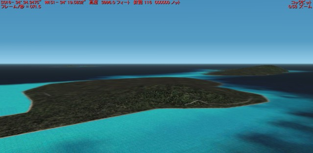
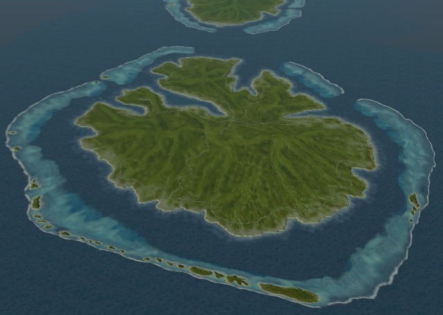

Fat Raiatea
シーナリー作成 四方山話 その２

Fat Raiatea
シーナリー作成 四方山話 その２

FS2002 オリジナルシーナリーで描画されるtahaaです。
1kmメッシュのterrainで作成されているので，
山がおおざっぱなのは仕方ないとしても，
その分，海岸線は手抜きしないで作ってほしかったのですが....
下の画像は，Addonの Tahiti LeeWard Scenery で描画される
Tahaaの鳥瞰図です。

FS2002 オリジナルシーナリーで描画されるtahaaです。 1kmメッシュのterrainで作成されているので， 山がおおざっぱなのは仕方ないとしても， その分，海岸線は手抜きしないで作ってほしかったのですが....
下の画像は，Addonの Tahiti LeeWard Scenery で描画される Tahaaの鳥瞰図です。